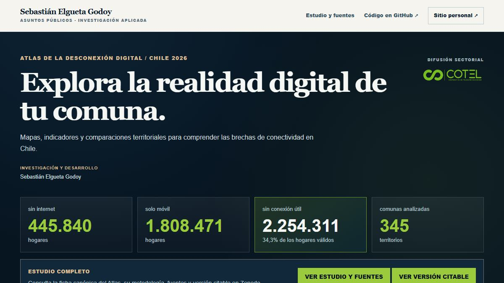

Territorio · Conectividad · Visualización comunal
Atlas de la Desconexión Digital
Mapa interactivo para buscar comunas, seleccionar indicadores y examinar brechas territoriales. La investigación y el repositorio del visualizador se mantienen identificados por separado.